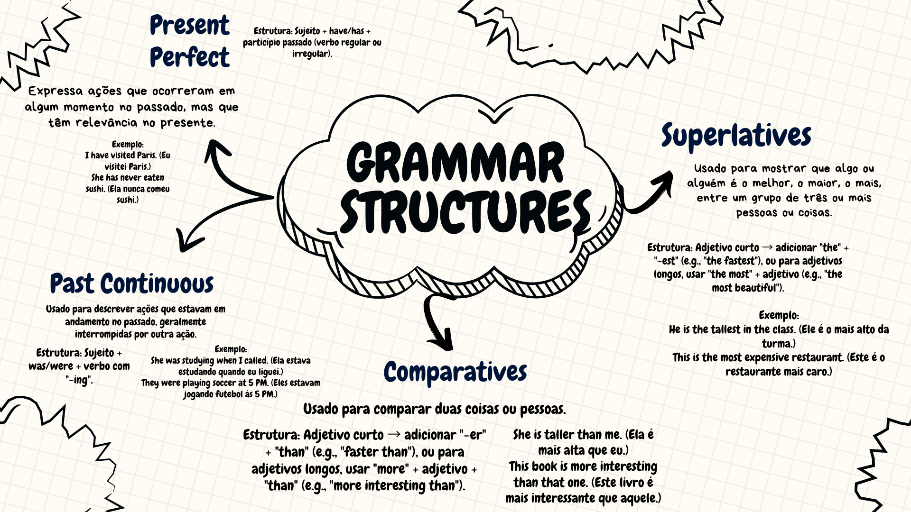

Explanation of Grammar Structures
Comparatives and Superlatives
Initial question: “Who is taller, you or your best friend?”
Comparatives
- Short adjective → add -er + than (e.g., faster than)
- Long adjective → use more + adjective + than (e.g., more interesting than)
Superlatives
- Short adjective → add the + -est (e.g., the fastest)
- Long adjective → use the most + adjective (e.g., the most beautiful)
Listen and Learn

Listen to the audio talking about Daniel Rivers' life when he traveled to New York
Mapa Mental - Grammar Structures
Grammar Quiz
1. Present Perfect - Choose the correct sentence
2. Past Continuous - Choose the correct sentence
3. Comparatives - Choose the correct sentence
4. Superlatives - Choose the correct sentence
5. Modal Verbs - Choose the correct sentence
6. Future (Going to) - Choose the correct sentence
Dialogue Practice
Situation: Two friends talking about a trip and their experiences.
Anna: Hi, Lucas! Have you ever been to New York?
Lucas: Yes, I have! I visited New York last summer.
Anna: Wow! What were you doing when you arrived?
Lucas: I was looking for my hotel. It was my first time there, so I got a little lost!
Anna: That sounds exciting. Have you seen the Statue of Liberty?
Lucas: Yes, I have. It was amazing!
Dialogue Example
Anna: Have you ever been to New York?
Brian: Yes, I have. It was an amazing experience!
Anna: What did you do there?
Brian: I visited museums, tried new foods, and met lots of people.